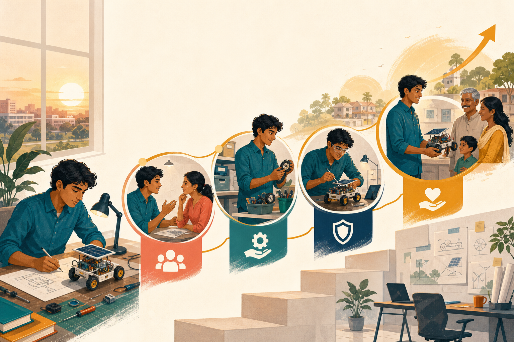

Contextual case
Connect the concept
Case connection: The Indian startup ecosystem shows that founders operate through customers, mentors, institutions, finance, policy and supply networks—not as isolated individuals.
I.1 · CO1 · K2
Entrepreneurship is a disciplined process for turning an opportunity into repeatable value—not merely the act of registering a business.

Explore the model
Use the controls to inspect each idea. Visited controls remain marked during this page visit.
Start with evidence
An idea becomes an opportunity when a real user has an important problem, the proposed solution can create value, and evidence suggests that the need is worth pursuing.
Organise the means
Entrepreneurs combine people, knowledge, finance, equipment, suppliers and networks. They rarely own every resource at the beginning; they learn to secure access and commitment.
Act with limits
Entrepreneurial risk is not reckless gambling. Assumptions are tested in small, affordable steps so technical, market and financial uncertainty can be reduced before major commitment.
Deliver an outcome
A venture must reliably improve a customer or social outcome and sustain delivery through revenue, funding or another viable operating model. Innovation matters only when it produces usable value.
From prototype to venture
A sensor prototype becomes entrepreneurial when it solves a validated problem, can be manufactured and serviced, reaches a user, and has a viable path to impact. Apply: Which untested assumption would you examine first?
Contextual case
Case connection: The Indian startup ecosystem shows that founders operate through customers, mentors, institutions, finance, policy and supply networks—not as isolated individuals.
Misconception watch
Common mistake: Treating every invention, project or newly registered firm as entrepreneurship without evidence of opportunity and value creation.
Ungraded self-check
Choose a student engineering project and identify its user, problem evidence, riskiest assumption and intended value.
This is formative feedback only; no answer or score is stored.
Alignment: CO1 - Discuss the fundamentals of entrepreneurship; K2 - Understand.
Core definition, engineering framing and evidence-led action
Entrepreneur, entrepreneurship and entrepreneurial-process framing
Opportunity, resources, environment and venture-organisation system
Template credit: Tabcordion interaction template by Montse Anderson, elearningdesigner.com
Visible instructional text is paraphrased from the supplied study material and designated references.